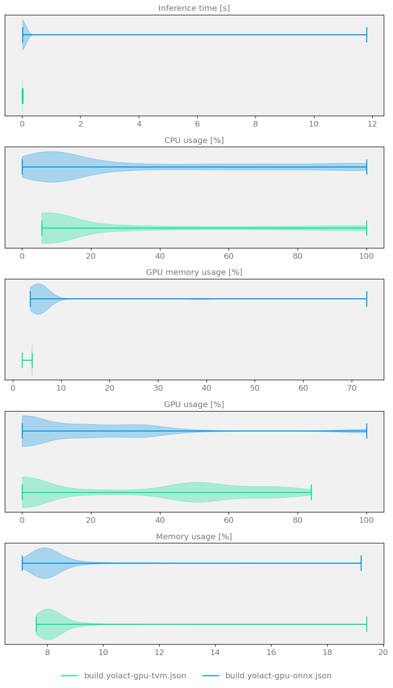
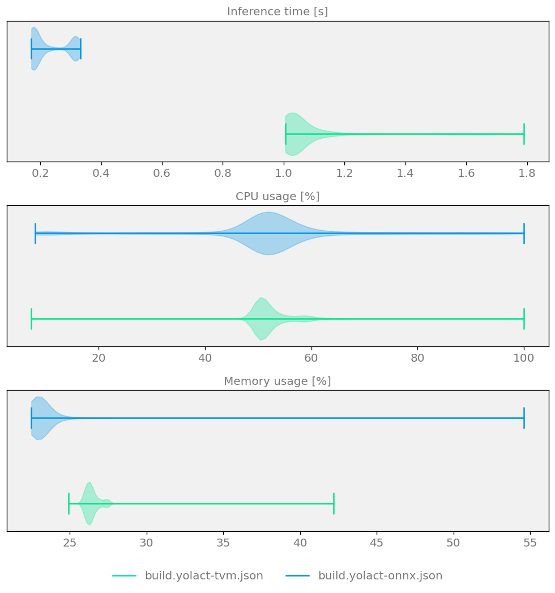

Optimizing and comparing an instance segmentation model¶
This example demonstrates how to optimize an instance segmentation model and compare different optimizers on CPU and GPU.
Base model used for demonstration is going to be YOLACT, short for “You Only Look At CoefficientTs” which is a fully convolutional model for real-time instance segmentation.
We will also need a dataset for evaluation purposes - in this case it is going to be OpenImagesDatasetV6.
The model will first be optimized for a given target using Kenning optimizers (TVM, ONNX), and finally compiled into a deployable, runtime-specific artifact. Model will be deployed on CPU and GPU using following Kenning compilers:
ONNXCompiler - wrapper for optimizing and converting models to format compliant for ONNX Runtime.
TVMCompiler - wrapper for TVM deep neural network compiler.
Dependencies¶
To run this scenario, you will need:
Hardware:
A CUDA-enabled NVIDIA GPU
Software:
UV - to quickly install Python dependencies and manage virtual environments
Experiments on GPU¶
In this section, the model will first be optimized for GPU execution using TVM and ONNX Runtime, and then benchmarked to compare the resulting performance.
Info
This example requires a CUDA-enabled GPU.
Depending on the example, you may also need:
CUDA Toolkit (13.0 recommended), including NVCC and NVRTC, to compile CUDA code.
cuDNN (9 recommended) for operations that use cuDNN.
NVML to generate GPU reports.
Check the example to see which of these components are needed.
Installation¶
First, let’s install the dependencies needed to run this scenario on GPU, and we’ll get to CPU afterwards.
Let’s install Kenning:
git clone https://github.com/antmicro/kenning.git
and the required libraries:
uv pip install \
--project ./kenning \
--group tvm-cuda \
"./kenning[object_detection,onnxruntime_gpu,reports]"
(GPU) Optimization¶
Optimization is the process of converting the trained model into a form better suited for fast, efficient inference on a given target.
With TVMCompiler, the model is compiled through TVM’s compiler stack into low-level, target-specific code (e.g. CUDA kernels for GPU, LLVM-generated code for CPU), applying optimizations such as operator fusion and memory layout tuning.
With ONNXCompiler, the model is instead converted into an optimized ONNX graph, which ONNXRuntime can then execute directly using its own set of hardware-specific execution providers (e.g. CUDAExecutionProvider, CPUExecutionProvider).
(GPU) TVM Optimization¶
To optimize the model on GPU using TVM, the yolact-tvm-gpu-detection.yml file has been prepared, which looks as follows:
1 2 3 4 5 6 7 8 9 10 11 12 13 14 15 16 17 18 19 20 21 22 23 24 25 26 27 28 | |
In this scenario:
model_pathpoints to a location of the YOLACT model in ONNX format. It can be either local file or a remote URL.kenning://is a special schema for Kenning’s demonstration models.datasettells to use Open Images dataset. The model will be downloaded to./build/OpenImagesDatasetV6. Thetaskfield allows to specify whether the dataset is used for instance segmentation or object detection.optimizerscontains only one element -TVMCompiler. In there we specify input model framework (onnx), and tell to usecudatarget withopt_levelequal to 3 (applying all possible optimizations not directly affecting model’s output).runtimetells Kenning to useTVMRuntimefor model execution, on GPU target.
To learn more about config files see Optimization Pipelines.
Setting target to cuda -libs=cudnn,cublas tells TVMCompiler to compile the model for CUDA execution, using cuDNN and cuBLAS kernels for the supported operations.
Setting target_device_context to cuda tells TVMRuntime to run inference on the GPU instead of the CPU.
To run the optimization and test the model, execute:
kenning optimize test \
--cfg yolact-tvm-gpu-detection.yml \
--measurements ./build/yolact-gpu-tvm.json \
--verbosity INFO
(GPU) ONNX Optimization¶
Now it’s time for ONNX.
Compared to TVM, the difference is that we change the optimizer to ONNXCompiler and the runtime to ONNXRuntime.
The yolact-onnx-gpu-detection.yml file has been prepared for this:
1 2 3 4 5 6 7 8 9 10 11 12 13 14 15 16 17 18 19 20 21 22 23 24 25 26 27 28 29 30 31 32 33 34 35 36 37 | |
execution_providers in ONNXRuntime holds a list of possible layer executors, starting from the most preferred one.
For GPU execution, CUDAExecutionProvider should be listed first, with CPUExecutionProvider as a fallback for operations without CUDA support.
Run the scenario as follows:
kenning optimize test \
--cfg yolact-onnx-gpu-detection.yml \
--measurements ./build/yolact-gpu-onnx.json \
--verbosity INFO
Comparison of GPU runtimes¶
To create a comparison report comparing performance and model quality for the above optimizers, run:
kenning report \
--report-path build/yolact-report/report.md \
--report-name "YOLACT detection report" \
--root-dir build/yolact-report \
--img-dir build/yolact-report/imgs \
--report-types performance detection \
--measurements build/yolact-gpu-tvm.json build/yolact-gpu-onnx.json

Figure 6 Model size, speed and quality comparison for two YOLACT Optimizers running on CUDA GPU¶
Experiments on CPU¶
Most of the steps for CPU will look nearly identical to those for GPU - the CPU section that follows mainly highlights the small modifications needed to switch from GPU to CPU execution.
Installation¶
Since we currently have TVM and ONNX Runtime packages installed for GPU, we need to uninstall them and install the CPU-compatible versions instead.
We can install CPU-only replacements with:
uv pip install "./kenning[object_detection, tvm, onnxruntime, reports]"
(CPU) Optimization¶
(CPU) TVM Optimization¶
The yolact-tvm-cpu-detection.yml file has been prepared to optimize the model with TVM on CPU, and looks as follows:
1 2 3 4 5 6 7 8 9 10 11 12 13 14 15 16 17 18 19 20 21 22 23 24 25 26 | |
Compared to the GPU scenario, the only differences are the target and target_device_context - here set to llvm and cpu respectively, instead of cuda -libs=cudnn,cublas and cuda.
To optimize and test the defined scenario, run:
kenning optimize test \
--cfg yolact-tvm-cpu-detection.yml \
--measurements ./build/yolact-tvm.json \
--verbosity INFO
(CPU) ONNX Optimization¶
Similarly to the GPU case, switching to a different runtime is a matter of changing several lines in the scenario, as shown below:
1 2 3 4 5 6 7 8 9 10 11 12 13 14 15 16 17 18 19 20 21 22 23 24 | |
This scenario can be executed with:
kenning optimize test \
--cfg yolact-onnx-cpu-detection.yml \
--measurements ./build/yolact-onnx.json \
--verbosity INFO
Comparison of CPU runtimes¶
To create a comparison report comparing performance and model quality for the above optimizers, run:
kenning report \
--report-path build/yolact-report/report.md \
--report-name "YOLACT detection report" \
--root-dir build/yolact-report \
--img-dir build/yolact-report/imgs \
--report-types performance detection \
--measurements build/yolact-tvm.json build/yolact-onnx.json

Figure 7 Sample comparison plot demonstrating model size, speed and quality for two YOLACT Optimizers¶
Summary¶
In this example, we optimized and deployed the YOLACT instance segmentation model on both GPU and CPU, using two different Kenning optimizers - TVMCompiler and ONNXCompiler - paired with their corresponding runtimes, TVMRuntime and ONNXRuntime.
The overall workflow was the same across both targets and both optimizers: prepare a scenario configuration, run kenning optimize test to optimize and benchmark the model, and generate a comparison report with kenning report.
Switching between GPU and CPU, or between TVM and ONNX, required only small, targeted changes to the scenario - primarily the target/target_device_context fields for TVM, and the execution_providers list for ONNX Runtime.
The resulting reports allow for a direct comparison of model size, inference speed and detection quality across all four configurations (TVM/ONNX × GPU/CPU), making it easier to choose the best-performing setup for a given deployment target.